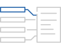
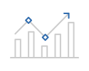

열정과 변화를 두려워하지 않는 도전정신으로,
미래기술을 선도할 여러분을 기다립니다.
신규 사업 검토 · 수익성 증대 · 전략체계 수립 및 전략과제 기획
회사 전반을 이끌어 나가는 부서로 사업부의 수익성을 분석하고, 문제 요소를 파악하여 개선 활동을 기획, 투자 관리를 통해 성과를
달성하는 성과 관리 부분을 담당하며, 사업의 방향성을 정하고 전략체계를 수립하며 신사업을 검토합니다. 문제 해결을 위한 과제를 수행하는 내부 컨설팅 역할을 수행합니다.
자질과 역량

- 사업 관리 및 전략 수립을 위한 기획력과 분석력 및 이를 문서화 시킬 수 있는 문서 작성 능력
- 경영 · 경제 전반적인 분야에 대한 지식과 안목 및 미시적 · 거시적 통찰력
- 다양한 자료와 의견을 조율하기 위한 효과적인 의사소통 기술
지속가능 경영을 위한 경영활동이 올바르게 진행될 수 있도록 조율하고 지원
회사의 비전과 목표를 수립하고 이를 달성하기 위한 실행전략 수립과 혁신 등의 업무를 담당합니다. 회사의 중장기 사업 전략과 목표를 수립하고 이를 달성하기 위한
재무 현황 관리와 더불어 전 임직원이 최적의 근무환경에서 효과적으로 업무를 추진할 수 있도록 지원하는 SERVICE 기능을 담당합니다.
자질과 역량
- 유관부서와의 협업 능력과 원활한 의사소통 능력
- 사업운영이 원활하게 진행될 수 있도록 돕는 협동 능력
- 중 · 장기 사업 전략을 파악하여 다양한 부서와 함께 업무를 진행하는 스케줄 관리 능력
다양한 프로젝트와 업무 개선 활동을 통하여 새로운 시스템을 구축하고 효율화하며, 동시에 안정적인 IT 서비스를 제공
HW 개발 - 회로 분석 및 아날로그 · 디지털 회로 설계 등 제품에 대한 전반적인 설계 및 개발을 담당하며, 다양한 테스트를
통해 신뢰성있는 제품 개발 업무를 수행하는 등 전반적인 개발 프로세스를 이끌어 나가는 중심적인 역할을 합니다.
기본 조건
회로 분석 및 설계, ORCAD 또는 알티움 Tool 사용 가능우대 조건
전자공학, CAD, 펌웨어 가능 (C언어)
펌웨어 개발 - 전자회로 하드웨어에 내장되어 있는 기능을 구현하는 직무를 담당하며, 사용자 요구 분석을 통해
설계된 동작 제어 등의 기능을 개발합니다.
기본 조건
회로 분석 및 설계, ORCAD 또는 알티움 Tool 사용 가능우대 조건
전자공학, CAD, 펌웨어 가능 (C언어)
솔루션 SW - 응용 소프트웨어를 개발하고 개발된 프로그램을 테스트 및 디버깅, 보완 작업을 거쳐 완성도 있는 제품을 구현하는 업무를 수행합니다.
기본 조건
C, C++ 또는 Java 가능우대 조건
컴퓨터 공학, 다양한 OS 경험(linux, windows 등), network 이해
[웹 개발]프론트엔드 - UI/UX를 설계하고 백엔드 개발자와 협업하여 사용자에게 보여지는 인터페이스를 개발합니다.
기본 조건
HTML5·CSS3 웹표준이해, jsp, Javascript, Spring, DB우대 조건
컴퓨터공학, 다양한프레임워크경험(Node, Angular, React, Vue) 등
[웹 개발]백엔드 - 웹서비스에 필요한 구조를 설계하고 구현하며 데이터베이스 연동, 특정 서비스 등을 개발합니다.
기본 조건
HTML5·CSS3 웹표준이해, jsp, Javascript, Spring, DB우대 조건
컴퓨터공학, 다양한프레임워크경험(Node, Angular, React, Vue) 등
모바일 SW(Android, iOS) - 스마트 폰에서 구동되는 애플리케이션을 개발하는 업무를 담당하며, 많이 사용되는 모바일 OS인
Android와 iOS의 소프트웨어를 개발합니다.
기본 조건
iOS 또는Android 이해, Swift 또는Kotlin 개발 가능우대 조건
컴퓨터공학, 배포/운영경험
AI 데이터 분석 / 모델링(빅데이터, Hadoop, Python, Tensorflow, Pytoch등) - 축적된 데이터를 분석하고 융합시켜 새롭고 가치 있는
정보로 도출해 내는 빅데이터 전문가로써의 직무를 담당합니다.
기본 조건
Python우대 조건
관련학과, 빅데이터설계/개발/운영, DL 모델설계/개발
기업의 사업방향에 따라 마케팅전략을 수립하고 추진
주요 고객을 유지 및 확보하기 위해 고객이 원하거나 필요로 하는 서비스를 제공합니다. 고객 충성도가 높아져 꾸준한 매출 효과를 기대하고 자사 브랜드가
소비자에게 어떻게 인식되는지 파악 및 기업이 원하는 방향으로 인지될 수 있도록 관리합니다. 기업의 역사 · 철학 · 비전 등을 함축하고 있는 브랜드 방향을
정립하고 이를 소비자에게 알리는 역할을 수행합니다.
자질과 역량

- 시장 경쟁 환경 분석 능력과 기업 ·마케팅전략 전반에 대한 지식과 활용 능력
- 보고서를 작성하기 위한 엑셀, 워드, PPT 등 각 문서들을 다루고 활용하는 능력
- 소비자 조사 및 주요 재무지표에 대한 기본적인 이해와 분석능력
회사의 지속 성장을 위한 과제 창출 및 운영 · 평가 관련 업무를 기획하고 관리
국내외의 새로운 과학 · 기술 정보, 경쟁사의 과학 · 기술 동향, 신제품 등의 정보 수집을 통해 관련 산업분야 및 제품에 대한 최신 기술을
파악하고 습득합니다. 신기술과 과학동향에 대한 데이터는 연구개발 시 유용하게 활용할 수 있도록 주기적으로 업데이트하고 관리합니다.
시장조사를 통해 고객 니즈를 파악하고 이를 반영하여 연구 방향을 설정하는 기능을 담당합니다.
자질과 역량
- R&D 연구개발 경험 혹은 연구개발에 대한 기술적인 이해
- 전략기획 능력, 과제관리(PM) SMDFUR
- 도전적이고 창의적인 자세와 정직함 및 냉정한 판단력